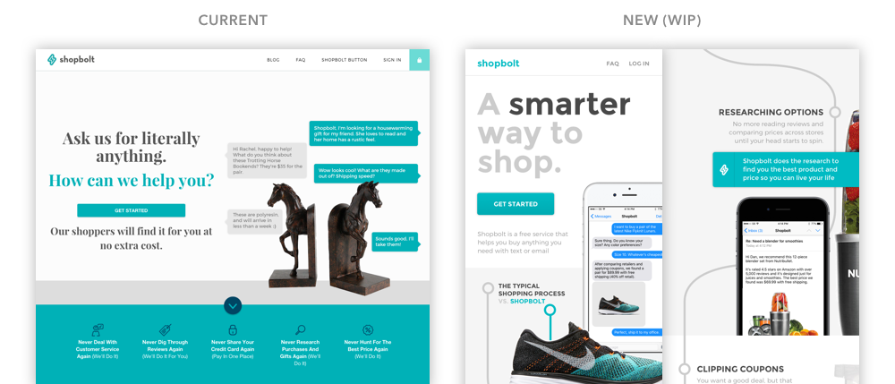

The Challenge
Shopbolt is a product that helps users buy anything they want through chat and email. Shopbolt stores your address, billing information, and shopping preferences so you purchase whatever you want through conversation. This type of service (often referred to as "conversational commerce") is challenging to introduce to users because it is an unfamiliar way of interacting with commerce. It also potentially spans an infinite scope of user problems from helping a user order a phone charger online to finding someone a new Thai place to try.
I was tasked with helping to identify the most salient user problems that users wanted to "hire" Shopbolt to solve and design a new homepage to communicate the solution to new users.

The Approach
We started by doing three things to better understand the user needs and perception of the product. We analyzed our order history over the past 6 months, we interviewed a dozen existing users by phone, and we ran a user test on our existing website. In short, we found a mismatch between how new users perceived the product and how existing users actually used and valued the product
Through interviews and analysis of order data, we found that users were using Shopbolt to solve problems lower in the purchase funnel - specifically, to help them find the best price on specific products, to find the best alternative of a specific product type (e.g. phone charger), saving them time when they didn't want to or couldn't shop online, and hunting down hard-to-find products. However, in our user tests, we found that new users perceived Shopbolt as a solution that solved problems high in the purchase funnel, like discovering products and helping to solve open-ended requests like gifts for friends. These new users also had a hard time articulating why someone would use Shopbolt over their existing ways of shopping.
The Solution (Work in Progress)
With the new user needs in mind, we wanted to craft a landing experience that would showcase the product in a way that would more effectively draw users to convert to trying out Shopbolt. We decided to design for mobile first because over half of our traffic came from mobile devices. We also wanted users to understand that our solution on solved the user problems we identified in research - comparing alternatives, finding the best price, and checking out.
We came up with the concept of positioning Shopbolt as the "smart" competitor to the typical, winding and time-consuming multi-step shopping process. We also wanted to make sure that this new concept of shopping-by-conversation felt intuitive to users and made sure to include clear examples of the conversations happening in the familiar contexts of SMS and email on their phones.
As soon as the team was happy with the new design, I threw the concept in Framer and set up an online user test. Testers immediately articulated the value and use cases of the product and identified and related to the bottom-of-funnel problems that Shopbolt solved for them. On the flip side, testers wanted to see more testimonials and product details before feeling comfortable giving their credit card. We are back to iterating on this feedback and hope to have the new site up in February 2016.